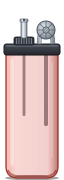
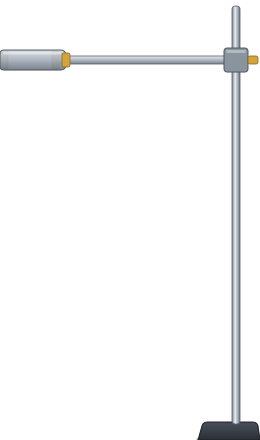
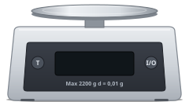

sc4.9: sprites i dobbelt størrelse (lighteren i tredobbelt)

lighter.svg (ny, uden hætte)
lighter med hætte
haette.svg (ny)

maaleglas.svg (ny, omvendt)

kar.svg (ny)

stativ.svg (ny)

vaegt.svg (som sc4.11)
 lup.svg (som sc4.11)
lup.svg (som sc4.11)